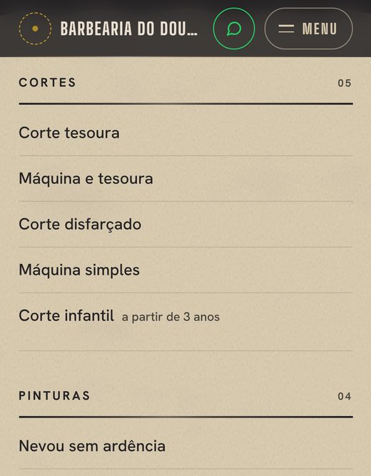
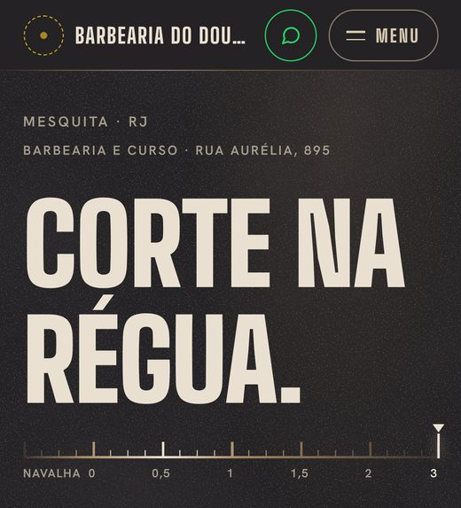
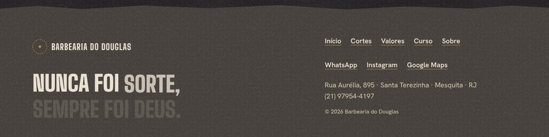
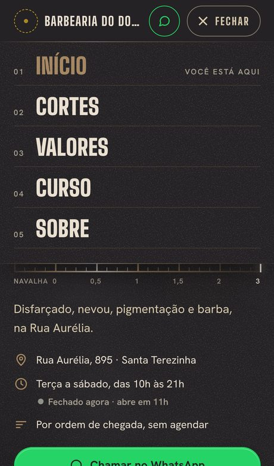
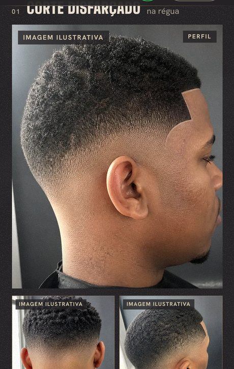
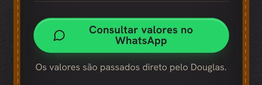
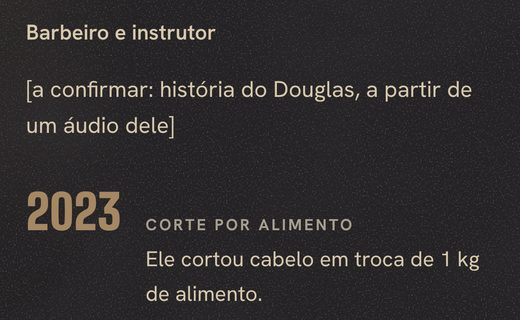

Barbearia do Douglas · Mesquita, RJ
Avaliação do site testado no navegador, revisão da análise do Fable ponto a ponto e direção para uma v4 original, com o que pedir ao Douglas e onde buscar referências.
Veredito
A base técnica da v3 é boa e não precisa ser refeita. O que impede a publicação são bugs que escondem informação (os preços do /valores, a frase do Douglas no computador e o nome da barbearia no iPhone), marcas de site inacabado (o círculo vazio do emblema e dois textos “[a confirmar]”) e a falta de qualquer foto real do trabalho do Douglas. O que impede o site de ser original é outra coisa: ele foi montado com o repertório de “barbearia premium” que serve para qualquer barbearia do mundo, e quase nada nele vem da Rua Aurélia.
Hoje · 2 horas
Preços invisíveis no /valores, frase do Douglas incompleta no computador, nome da barbearia cortado no iPhone, menu pela metade, botão quebrado e os “[a confirmar]”. O texto pronto para o outro chat está no Apêndice A.
Esta semana · 15 min
Fotos dos cortes (sem rosto e com autorização), uma foto do Douglas sem filtro e um áudio com as respostas que faltam. As duas mensagens estão prontas na seção 10.
Com o material · v4
Fotos reais no lugar das ilustrativas, a voz dele sem moldura de revista, um único sinal gráfico tirado do corte dele e movimento só onde explica alguma coisa.
O que eu li e o que testei
Tudo que aparece no site precisa ter uma fonte. Esta tabela é a referência para a v4: se uma informação não está aqui, ela não entra no site.
| Informação | Fonte | Situação |
|---|---|---|
| Rua Aurélia, 895, Santa Terezinha, Mesquita, RJ, CEP 26553-495 | Bio do Instagram | Confirmado |
| WhatsApp (21) 97954-4197 | Bio, flyer e você | Confirmado. A placa da porta, nas fotos do Google, mostra outro número: (21) 97196-6466 |
| Terça a sábado, das 10h às 21h | Instagram e mini site | Confirmado |
| Feriados, das 10h às 16h | Flyer dele, confirmado por você | Confirmado. Pendentes: Natal, Ano Novo e São Jorge (23/04, feriado estadual no RJ) |
| Ordem de chegada, sem agendar | Você, com o Douglas | Confirmado |
| Cartão ou Pix · tempo médio de 35 minutos · infantil a partir de 3 anos | Você, com o Douglas | Confirmado |
| Os 12 preços do flyer (o infantil não tem valor no flyer) | Flyer dele, confirmado por você | Confirmado |
| Alisamento, cacheados, tingimento de barba, pacote para noivos | Mini site youware (análise de 11/10) | Do perfil, sem confirmação direta. No site aparecem como “consulte” |
| Curso toda segunda, horário combinado | Você, com o Douglas | Confirmado |
| Aulas práticas, certificado, vagas limitadas | Flyer do curso e bio dele | Material dele. Falta: certificado de quê e quantas vagas por turma |
| “Você aprende na cadeira e já sai trabalhando.” | Aprovada pelo Douglas | Confirmado |
| Precisa ter experiência para o curso? | Ninguém respondeu | Pendente. Hoje aparece “[a confirmar com o Douglas]” no /curso |
| História do Douglas | Áudio que ainda não veio | Pendente. Hoje aparece “[a confirmar: história...]” no /sobre |
| Corte em troca de 1 kg de alimento, em 2023 | Reel de 16/07/2023 | Confirmado pelo perfil |
| Fotos dos cortes | 26 imagens geradas por IA no Canva | Ilustrativas. Nenhuma foto real ainda |
| Retratos do Douglas (preto e branco e na cadeira) | Enviados por você | Têm cara de gerados por IA. O da fachada já saiu do site por mostrar poste e letreiro que não existem |
| “Está na porta da barbearia”, legenda da frase dele no /sobre | Um brief meu anterior, sem fonte registrada | Confirmar com o Douglas antes de publicar |
| Texto | Onde está na v3 | Origem |
|---|---|---|
| “Que Deus abençoe cada cliente da família Barbearia do Douglas.” | Início e /sobre | FatoLegenda dele em 01/10/2026 |
| “Nunca foi sorte, sempre foi Deus.” | Rodapé das 6 páginas e /sobre | FatoFrase dele, passada por você |
| Provérbios 22:6 | Início | FatoEle usou no post do Dia dos Pais, 09/08/2026 |
| Provérbios 22:29 | /cortes | Sugestão minha neste chat, a seu pedido |
| Provérbios 27:17 | /curso | Sugestão minha |
| Salmo 90:17 | /sobre | Sugestão minha |
Leitura: a fé é do Douglas e é verdadeira. O excesso veio de nós: 4 versículos, a bênção duas vezes e a frase repetida em todas as páginas. A correção é reduzir, e quem escolhe o que fica é ele.
Testei cada afirmação em vez de aceitar. O Fable acertou o essencial e errou em detalhes que mudam a forma de corrigir. Os vereditos: Procede Procede em parte Não procede Procede e é pior
| # | O Fable disse | O que eu encontrei no código e no navegador | Veredito |
|---|---|---|---|
| 1 | Os preços podem ficar invisíveis se a pessoa rola rápido ou entra por âncora. | No /valores, os 17 valores da tabela ficam invisíveis do início ao fim da rolagem, no celular e no computador. Como a regra nunca encaixa, a velocidade da rolagem não muda nada. O JS marca cada lista com a classe vista, mas o CSS espera essa classe no bloco de fora (.tabela-viva.vista), então a regra nunca encaixa. Só quem ativou “reduzir movimento” vê os preços. Na home, nos meus testes, os preços apareceram rolando normalmente e pela âncora. Eles só somem numa captura de página inteira sem rolar, que é provavelmente o que o Fable viu. | Procede e é pior |
| 2 | A barra fixa cobre os links no fim de cada seção. | Conteúdo passando por baixo de uma barra fixa durante a rolagem é normal, e no fim da página o rodapé já reserva 104 px. Achei um caso real: navegando pelo teclado, o link “Ver todos os cortes” fica 10 px atrás da barra. A correção certa é scroll-padding-bottom. Padding no main não resolve. | Procede em parte |
| 3 | Placeholder publicado no /sobre. | Confirmado, e há mais dois: “[a confirmar com o Douglas]” na dúvida “Precisa ter experiência?” do /curso e o círculo tracejado no lugar do emblema, no topo e no rodapé de todas as páginas. | Procede |
| 4 | “Consultar valores no WhatsApp” quebra em 2 linhas. | Confirmado de 320 a 414 px, no card do curso da home e do /curso. | Procede |
| 5 | O menu do celular não ocupa a tela. | Confirmado: topo e menu juntos cobrem 57% da altura da tela, e o resto do hero, com a régua, aparece embaixo. | Procede |
| 6 | Fotos de banco com selo “Imagem ilustrativa”. | O efeito é esse, mas a origem é outra: são as 26 imagens que geramos por IA no Canva. O selo existe para não apresentar IA como trabalho dele. A solução é a mesma: fotos reais. | Procede, origem errada |
| 7 | Os retratos do Douglas têm cara de gerados. | Concordo. Eu já tinha apontado isso, e o próprio outro chat tirou a foto da fachada por mostrar poste e letreiro que não existem. Confirmar com o Douglas e trocar por foto real. | Procede |
| 8 | Seções numeradas 01 a 05 com filete e losango. | Concordo. É o esqueleto de landing editorial que se repete em todo site gerado. | Procede |
| 9 | Copy com ritmo de IA: “MUITA RÉGUA.”, “SEM AGENDAR.” | As palavras são dele: “Muita régua” é legenda do Instagram de 2023 e 2024, e a bênção é legenda de outubro. O que soa como modelo é a montagem: caixa alta, ponto final de efeito e bloco de citação. Manter as palavras e mudar a montagem. | Procede em parte |
| 10 | Dois versículos e a frase; se foi a IA preenchendo, fica forçado. | São 4 versículos, não 2. Provérbios 22:6 e a frase são dele; os outros três fui eu que sugeri. O volume pesa, a fé não. Ver a seção 02. | Procede em parte |
| 11 | A régua “NAVALHA 0 a 3” no hero não tem função. | Concordo: ocupa cerca de 50 px da primeira tela, contando o espaço acima dela, e fala a língua do barbeiro, não a do cliente. | Procede |
| 12 | Card do curso com cara de etiqueta e “Vagas limitadas” vazio. | “Vagas limitadas” e “certificado” vêm do flyer e da bio dele, não foram inventados. Mas sem número viram promessa genérica. A costura animada é decoração. | Procede em parte |
| 13 | Tabela AULAS / HORÁRIO / FORMATO / CERTIFICADO repetida. | Concordo. Na home basta uma linha. | Procede |
| 14 | Rodapé com frase em duas cores, padrão de template. | Isso é um bug. A frase aparece palavra por palavra conforme a rolagem; no computador a página termina antes e as últimas palavras ficam com 14% de opacidade nas 5 páginas: “sorte, sempre foi Deus.” em 1440x900 e “sempre foi Deus.” em 1280x720. | Não procede: é bug |
| 15 | Três famílias e 7 arquivos de fonte pesam no 4G. | Pesam pouco: 109 kB no total, com LCP de 1,1 a 1,45 s em 4G lento e CPU 4x. Tirar a Libre Caslon (27 kB) faz sentido quando as citações mudarem de estilo, não por desempenho. | Procede pouco |
| 16 | Imagens lazy sem width e height geram layout shift. | Todas as imagens têm width e height. CLS medido rolando a página inteira: de 0,000 a 0,002. | Não procede |
| 17 | O status depende do relógio, não considera feriado e aparece duplicado. | O código considera feriados (lista FERIADOS, que precisa ser atualizada todo ano) e calcula no fuso de São Paulo. A duplicação na home é real. | Procede em parte |
| 18 | Ordem de execução e mensagem ao Douglas. | Boa base. Ajustei a mensagem com autorização do cliente, sem rosto e sem tatuagem, e com as pendências do curso (seção 10). | Procede |
| 19 | O site vira case para vender o Site Estratégico. | Concordo, com uma condição: case precisa de resultado, e o GA4 ainda não está instalado. Sem medir cliques no WhatsApp, o case vira só um antes e depois. | Procede |
O Fable analisou só a 390 px. Testando em mais larguras, no computador e lendo o código, apareceram estes pontos.
canonical e og:image estão comentados e o sitemap aponta para “SEU-DOMINIO”. Um link mandado no WhatsApp sai sem imagem, e é por WhatsApp e Instagram que esse site vai circular.Capturas feitas nos testes, com a v3 do zip.







O Fable chamou isso de “essência IA”. Eu separo em três camadas, porque cada uma tem um remédio diferente e só uma delas se resolve com design.
| Camada | O que está acontecendo | Remédio |
|---|---|---|
| 1. Conteúdo emprestado | 26 imagens geradas, 2 retratos gerados, 3 versículos sugeridos por nós e dois textos provisórios. O visitante procura o trabalho do Douglas e encontra ilustração. | Material do Douglas. Nenhuma mudança de layout resolve essa camada. |
| 2. Montagem de modelo | Índices numerados com filete e losango, títulos em caixa alta terminados em ponto, citações em serifa itálica com aspas gigantes, filetes de metal em degradê, moldura de couro com costura. Cada peça é bem feita; juntas, formam o repertório de “barbearia premium” que aparece em qualquer lugar do mundo. | Tirar a moldura e deixar o conteúdo dele organizar a página. |
| 3. Efeito demais | Mais de 20 efeitos de movimento e 30 animações rodando na home. Quando tudo se mexe, nada se destaca, e dois desses efeitos escondem informação. | Ficar com três movimentos que explicam alguma coisa (seção 08). |
A v3 mostra uma barbearia premium. A v4 mostra a barbearia do Douglas: o corte dele, o preço dele, a semana dele e o jeito dele de falar. Neste projeto, a originalidade vem de material verdadeiro organizado com cuidado. Efeito ajuda pouco.
InferênciaNos prints do Instagram que você mandou, quase todos os cortes do Douglas têm a entrada da têmpora fechada num ângulo reto. É a assinatura dele.
Na v4, esse ângulo vira o único detalhe gráfico do site: um canto em L de 2 px no topo esquerdo das fotos e nas divisões de seção. É simples de fazer, não pesa nada e nenhuma outra barbearia pode reivindicar, porque vem do corte dele.
Confirmar com o Douglas se ele se reconhece nisso antes de fechar.
FatoFecha segunda e domingo. O curso é toda segunda.
Uma faixa com os 7 dias resolve horário, curso e folga num olhar. Serve no início e no /curso.
Frase candidata: “Segunda a barbearia fecha pra cliente e abre pra aluno.” Confirmar se as aulas são na própria barbearia.
InferênciaQuase toda barbearia fecha o corte mostrando a nuca no espelho de mão. Confirmar se o Douglas faz assim.
A troca de vista que já existe (perfil, nuca, três quartos) vira esse gesto: “Toque para ver a nuca, como no espelho.” É o único movimento novo da v4, e ele explica alguma coisa.
FatoO flyer dele já tem os 12 preços, com os nomes que ele mesmo escolheu.
O /valores segue a mesma ordem e os mesmos nomes do flyer, com números grandes e sem animação. Quem já viu o flyer reconhece na hora.
FatoÉ por ordem de chegada, sem agendamento.
Quem não agenda quer saber se vai esperar muito. Se o Douglas disser os dias e horários mais tranquilos, isso vira uma linha útil que nenhum site de modelo tem. E cada corte no /cortes mostra o preço ao lado do nome.
| Página | Hoje, na v3 | Na v4 |
|---|---|---|
| Topo | Círculo do emblema vazio e nome cortado no celular. | Só o nome, inteiro. O emblema entra quando chegar o arquivo. |
| Início | Título em caixa alta, régua de 0 a 3, nenhuma foto real na primeira tela. | Foto real de um corte, “Corte na régua, na Rua Aurélia”, preço a partir de, “sem agendar” e o botão do WhatsApp. |
| Seções do início | Índices 01 a 05, losangos, citação em serifa. | Títulos diretos: Cortes, Preços, Douglas, Curso, Endereço. A semana da barbearia no lugar da tabela do curso. |
| /cortes | 26 selos, nenhum preço, versículo com “plebe”. | Fotos reais; selo só onde ainda for ilustração; preço ao lado do nome; o espelho na troca de vista. |
| /valores | Preços invisíveis e tabela animada. | Tabela parada, na ordem do flyer, com números grandes. |
| /curso | Especificação em tabela, costura animada e “[a confirmar]”. | A semana da barbearia, o que se aprende, quem pode fazer (com a resposta do Douglas) e foto real de aula, se houver. |
| /sobre | Texto provisório e três blocos de fé. | A história do áudio, em primeira pessoa e curta; a frase dele uma vez; o corte por alimento de 2023. |
| Rodapé | Frase animada que não termina no computador. | Endereço, telefone, horário, Instagram e a frase, parada. |
Rascunhos. A versão final sai do áudio do Douglas.
| Hoje | Proposta |
|---|---|
| CORTE NA RÉGUA. (com a régua de 0 a 3 embaixo) | Corte na régua, na Rua Aurélia (sem ponto final de efeito, com foto real ao lado) |
| MUITA RÉGUA. / Máquina, tesoura e navalha | Cortes (título direto; “muita régua” vai para a legenda de uma foto, que é onde ele usa a expressão) |
| TABELA / Você já sai de casa sabendo quanto vai pagar. | Preços / O valor de cada serviço, igual ao da barbearia. Cartão ou Pix. |
| SEM AGENDAR. É SÓ CHEGAR. | Sem marcar horário: é por ordem de chegada, de terça a sábado, das 10h às 21h. |
| CURSO COM CERTIFICADO · VAGAS LIMITADAS | Toda segunda, aula na cadeira, com certificado. Turmas de [número que o Douglas disser]. |
A v3 tem uma boa ideia de movimento: tirar os gestos do próprio ofício. O erro foi aplicar em tudo, inclusive em informação. A v4 fica com três.
| Movimento | O que ele explica | Como | Com “reduzir movimento” |
|---|---|---|---|
| 1. Disfarçado no título | O degradê, a assinatura do ofício | Máscara em degradê sobe de baixo para cima no título da primeira tela, uma vez só, em 0,7 s (hoje leva 1,5 s). Sem lâmina e sem marcador na régua. | Título aparece pronto |
| 2. Espelho no /cortes | A troca de vista, como o espelho de mão no fim do corte | A foto troca em 0,25 s, com um leve deslocamento lateral, como quem vira a cabeça. | Troca direta |
| 3. Resposta ao toque | Que o botão foi tocado e que o menu abriu | Botão afunda 3% ao toque. Menu abre em 0,2 s. | Sem animação |
Referência de barbearia premium leva ao mesmo lugar da v3. Para chegar a um site original, a pesquisa precisa sair do nicho e entrar no mundo real do Douglas. Todas as fontes abaixo foram verificadas em 15/10/2026.
| Painel | Fonte | Para que serve | Como buscar |
|---|---|---|---|
| Rua | A própria Rua Aurélia | É a referência que nenhuma outra barbearia tem. | Fotografar fachada, placa, rua, comércio vizinho, a cadeira, a capa, o espelho e o que estiver escrito nas paredes, com autorização do Douglas. |
| Rua | Abridores de Letras de Pernambuco (Blucher, 2013), de Fátima Finizola, Solange Coutinho e Damião Santana | Linguagem do letreiro popular brasileiro: números grandes, contraste forte, hierarquia de rua. | Amostra do livro no site da Blucher e a matéria da Revista Pesquisa FAPESP de 2026 sobre os abridores de letras. |
| Rua | “Temos letras”, TCC de William Almeida (UFRJ, 2019) | Letreiros populares do Rio, registrados zona por zona. | PDF no repositório Pantheon da UFRJ. |
| Tela | Godly (godly.website) | Tipografia, composição e ritmo. | Olhe a hierarquia e ignore os efeitos 3D e WebGL, comuns em site de agência e inúteis aqui. |
| Tela | SiteInspire (siteinspire.com) | Sites filtrados por tipo, assunto e estilo. | Filtre por estilos tipográficos e sites de serviço. |
| Tela | Fonts In Use (fontsinuse.com) | Tipografia aplicada no mundo real, organizada por fonte, formato e setor. | Procure sinalização, fachadas e fontes condensadas, como a Big Shoulders. |
| Tela | Banco grande, bom com termos em português. | “letreiro pintado à mão barbearia”, “tabela de preço barbearia parede”, “fachada barbearia de bairro”, “fotografia documental barbearia”. | |
| Tela | Cosmos (cosmos.so) | Onde montar os três painéis, sem anúncio. | Um painel por tema; compartilhe o link com o outro chat junto com o brief. |
| Movimento | motion.dev/examples | Exemplos oficiais da biblioteca que o site já usa. | Procure troca de imagem, transição de layout e estados de botão. |
| Movimento | scroll-driven-animations.style, do Bramus (Google Chrome) | Demos de animação ligada à rolagem, em CSS puro. | Use para entender o limite: no site do Douglas, rolagem nunca deve controlar informação. |
| Movimento | Codrops (tympanus.net/codrops) | Técnicas de revelação de imagem com clip-path. | Artigos “Double Image Hover Effects with Clip-Path Animations” e “Image Layer Animations with Clip-Path”, ambos de 2023. |
| Movimento | Emil Kowalski, “The Magic of Clip Path” | Revelações leves, aceleradas pela placa de vídeo. | Base técnica para o movimento do espelho. |
| Movimento | Vídeos de barbeiro no Instagram e no TikTok | O vocabulário de movimento do ofício: o degradê, a régua, o espelho de mão. | Busque “degradê câmera lenta”, “espelho barbeiro”, “régua navalha”. Anote gestos, não estilos de edição. |
Duas mensagens. A primeira destrava o site; a segunda pode vir em áudio quando ele tiver tempo. O tom é o seu, para ele.
Fala, Douglas! O site tá quase pronto. Pra ficar com a sua cara de verdade, agora o mais importante é foto do seu trabalho. Pode ser no celular mesmo:
Juntando uns 8 cortes diferentes (disfarçado, nevou, reflexo, pigmentação, barba e um infantil), já resolve. E me manda também uma foto sua aí na barbearia, sem filtro, de preferência trabalhando.
Outra coisa: quando der, me manda um áudio respondendo do seu jeito, sem pressa.
Ah, se tiver o arquivo da logo das navalhas com a coroa, me manda também. E vi que a placa da porta, nas fotos do Google, tá com outro número. Se não for mais o seu, vale trocar pra ninguém ligar no número errado.
Diferença para a mensagem do Fable: autorização do cliente, regra de rosto e tatuagem, criança com autorização dos pais e as pendências do curso, que travam o /curso.
| Tarefa | Prazo estimado | Resultado esperado |
|---|---|---|
| Colar o Apêndice A no outro chat e conferir com a mesma bateria de testes | Hoje, 1 bloco de 2 h | Nenhum preço, frase ou nome escondido; nenhum “[a confirmar]” no ar |
| Se você decidir esperar as fotos: deixar o site fora do Google até o lançamento | Hoje, 5 min (item 10 do Apêndice A) | Ninguém encontra a versão provisória numa busca |
| Mandar as duas mensagens ao Douglas | Hoje, 15 min | Fotos e áudio começam a chegar |
| Fechar as decisões da seção 07 | Esta semana, 30 min | Direção da v4 travada antes de abrir o outro chat |
| Montar os três painéis de referência | Esta semana, 2 blocos de 1 h | De 18 a 24 referências, cada uma com “o que eu pego” anotado |
| Receber e organizar o material do Douglas | 1 a 2 semanas, depende dele | 8 cortes reais, 1 retrato e a história em áudio |
| Fazer a v4 com o material, seguindo as seções 07 e 08 | 2 a 3 blocos de 2 h, depois do material | Site com prova real, voz dele e três movimentos |
| Lançar: domínio, GA4, imagem de compartilhamento, Search Console, Google Meu Negócio e retirada do bloqueio de busca | 1 bloco de 2 h | Site no ar, medindo cliques no WhatsApp |
| Os 12 templates de post do ESCOPO, com as mesmas fotos | Logo depois do lançamento | Instagram com prova recente, alinhado ao site |
| Ler os números | 30 dias depois do lançamento | Cliques no WhatsApp por página, para o case do Site Estratégico |
Seu tempo estimado até o lançamento: de 11 a 13 horas, em blocos de 1 a 2 horas. O prazo real depende de quando o Douglas mandar o material.
FatoO ESCOPO vendeu um site de página única e 12 templates de post. Até aqui foram 3 versões de um site de 5 páginas, 26 imagens, paleta e wireframes. Os 12 templates ainda não começaram. O acordo comercial (valor, uso como portfólio, depoimento e rodadas de ajuste) continua em aberto no BRIEFING.
InferênciaVocê já está entregando bem acima do vendido. Isso pode ser uma boa decisão se o objetivo for portfólio, mas precisa ser uma decisão, e não um acúmulo de rodadas.
Recomendação
Se o Douglas mandar as fotos amanhã, o que mais falta para você chamar esse site de entregue?
Vale responder antes de abrir a v4. Se a resposta for “nada”, o plano acima é suficiente. Se aparecer uma lista nova, ela é escopo novo.Só os consertos de hoje. O item 10 só vale se você decidir esperar as fotos (seção 07).
TAREFA: corrigir os bugs da v3 sem mudar layout, cores, fontes ou textos além do
que está pedido aqui. Se algo não estiver claro, pergunte antes de mudar.
1. PREÇOS INVISÍVEIS (o mais grave)
Em /valores os 17 valores da tabela nunca aparecem: o JS coloca a classe .vista em cada <dl>,
mas o CSS exige .tabela-viva.vista no bloco de fora. Corrija tirando a animação:
• site.css: apague o bloco "complemento · tabela" (as 4 regras com .tabela-viva).
• site.js: apague o bloco "tabela: pontilhado se desenha e o preço aparece no fim"
(o IntersectionObserver ioTab e o setProperty --d).
Regra daqui em diante: preço, horário, endereço e frases nunca dependem de
animação para aparecer.
2. FRASE DO RODAPÉ INCOMPLETA NO COMPUTADOR
.frase-viva liga a opacidade de cada palavra à rolagem. No desktop a página acaba
antes e as últimas palavras ("sempre foi Deus.") ficam com 14% de opacidade.
Tire o efeito:
• site.css: apague a regra ".js-motion .frase-viva .palavra{...}".
• site.js: dentro de rola(), apague só o laço frases.forEach que calcula --p.
O trecho do MESQUITA (parallax) fica como está.
3. NOME CORTADO NO TOPO E CÍRCULO DO EMBLEMA
O nome aparece cortado no topo de 320 a 390 px. Remova o .marca-slot (círculo
tracejado) do topo e do rodapé nas 6 páginas até chegar o arquivo do emblema.
Sem o círculo, o nome ganha 44 px e cabe inteiro a partir de 375 px.
Abaixo de 375 px, deixe o nome quebrar em 2 linhas (white-space:normal;
line-height:.95) em vez de usar reticências.
4. MENU DO CELULAR
Topo e menu cobrem só 57% da tela e o hero aparece embaixo. Faça o menu ocupar a
altura toda abaixo do topo (position:fixed; top:var(--topo); bottom:0;
overflow:auto) e trave a rolagem da página enquanto ele estiver aberto.
5. BOTÃO DO CURSO
"Consultar valores no WhatsApp" quebra em 2 linhas de 320 a 414 px no card do
curso (início e /curso). Troque por "Consultar valores", igual à barra.
6. TEXTOS PROVISÓRIOS
• /sobre: esconda o parágrafo "[a confirmar: história do Douglas...]".
• /curso: esconda a dúvida "Precisa ter experiência?" até o Douglas responder.
7. STATUS DUPLICADO NO INÍCIO
Mantenha "Aberto agora / Fechado agora" só no hero. Tire o [data-status] do
título "Horário" da seção "Onde e quando" do início.
8. FOCO ATRÁS DA BARRA
Em telas menores que 900 px:
html{scroll-padding-bottom:calc(80px + env(safe-area-inset-bottom,0px))}
9. ERRO NO CONSOLE DO COMPUTADOR
Em aplicaBarra(), só chame M.animate(barra,...) se
getComputedStyle(barra).display !== 'none'.
10. FORA DO GOOGLE ATÉ O LANÇAMENTO
No vercel.json, no bloco "source": "/(.*)", acrescente o cabeçalho
X-Robots-Tag: noindex. Ele sai no dia do lançamento.
CONFERÊNCIA ANTES DE ME DEVOLVER
Rode a mesma bateria de antes (320 a 1920 px e "reduzir movimento") e confirme:
• os 17 valores do /valores visíveis, sem depender de rolagem;
• a frase do rodapé inteira no desktop, em 1440x900 e 1280x720, no fim da página;
• nome completo no topo em 320, 360, 375 e 390 px;
• nenhum "[a confirmar" no texto visível de nenhuma página;
• nenhum erro no console.
Me devolva a lista do que mudou, arquivo por arquivo.
| Página | LCP em 4G lento + CPU 4x | LCP em 3G + CPU 6x | CLS (pior caso) | Peso inicial (4G) | Peso após rolar tudo (4G) |
|---|---|---|---|---|---|
| Início | 1,31 s | 2,36 s | 0,002 | 479 kB | 586 kB |
| /cortes | 1,45 s | 2,68 s | 0,001 | 619 kB | 1,8 MB |
| /valores | 1,10 s | 2,18 s | 0,001 | 174 kB | 174 kB |
| /curso | 1,12 s | 2,21 s | 0,001 | 250 kB | 250 kB |
| /sobre | 1,29 s | 2,64 s | 0,001 | 231 kB | 231 kB |
4G lento: 1,6 Mbps e 150 ms de latência. 3G: 750 kbps e 300 ms. Na Vercel, HTML, CSS e JS saem comprimidos (de 60 a 80 kB a menos por página, medido com gzip), então os números reais tendem a ser melhores. Em 3G, /cortes e /sobre ficam um pouco acima de 2,5 s, o que é aceitável para essa rede.
| Teste | Resultado |
|---|---|
| Rolagem lateral, 5 páginas, 9 larguras | Nenhuma, de 320 a 1920 px |
| Nome no topo | Cortado em 320 (87 de 168 px visíveis), 360, 375 e 390 px. Inteiro a partir de 414 px |
| Preços com “reduzir movimento” | Os 17 aparecem. Sem essa opção, nenhum aparece no /valores |
| Frase do rodapé no fim da página | Inteira no celular. No computador, 4 das 6 palavras ficam em 14% de opacidade em 1440x900, e 3 em 1280x720 |
| Erros no console, rolando a página inteira | 1440 px: 2 no início, 1 em /valores, /curso e /sobre, nenhum em /cortes. 390 px: nenhum |
| Contraste de texto (WCAG) | Todos os pares usados passam no nível AA. O menor é Barley sobre Coal, com 4,71:1 |
| Nós no DOM | Início 443, /cortes 320, /valores 247, /curso 193, /sobre 156 |
| Animações ativas após carregar | Início 30 (4 infinitas), /cortes 18, /curso 11, /sobre 10, /valores 8. Medido à noite, com a barbearia fechada |
| Fontes | 7 arquivos, 109 kB no total; a Libre Caslon sozinha tem 27 kB |